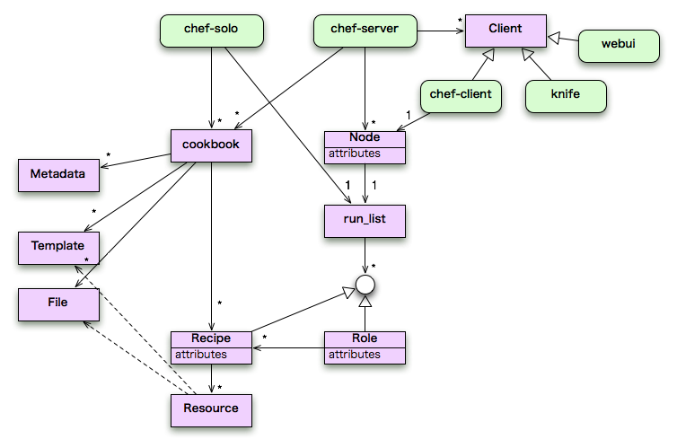

Chef でサーバ管理を楽チンにしよう！ (第 1 回)
書いた人：諸富 洋 (@164c)
最初に
世の中には大小いろいろな Web サービスがありますが、筆者が携わる「DECOLOG」もその Web サービスの中の1つです。 「DECOLOG」は、モバイル向けのブログサービスというところまでは一般的なカテゴリなのですが、ユーザーの 9 割近くが女の子というところで特異な性質を持つサービスと言えます。 2007 年に始まったこのサービスも近頃の女子パワーを反映する形で成長し、今では月間 65 億 PV 超の国内最大級のブログサービスになりました。
この「DECOLOG」は、そのシステム開発・運用において、ハードウェア以外のすべてを内製でまかなっており、管理下にあるサーバも 450 台を超えています。
サーバの数がこれだけになってくると管理コストも馬鹿にならず、また、手作業によるミスも多くなってきます。 こういった、サーバの管理コスト・リスクを下げることがどうやったらできるだろう？という疑問の答えの１つが Chef でした。
Chef とは
Chef とは Ruby 製のサーバの構成管理ツールです。
例えば Web サーバを冗長化していると、「あっちの Web サーバとこっちの Web サーバの設定が微妙に違う」といったことや、新しいモジュールを組み込みたい、といったときに「全サーバ巡礼の苦行」を味わったりすることがしばしばあります。
つまり、Chef とは上記のような問題が解決できるツールで、ソフトウェアのインストール状況や設定ファイルを定義した状態に保ってくれるツールです。
対象読者
サーバのセットアップをよくする人
選定編
システムの世界において、ある課題解決をするツールが 1 つしかない、ということはあまりありません。だいたいそれぞれ一長一短ですので、できれば最適なものを選択したいものです。サーバの構成管理ツールでは Chef と知名度を二分するものに「Puppet」というのがあり、この 2 つが OSS としては知名度 TOP 2 のようだったので、その違いを最初に比較してみました。
| Puppet | Chef | |
| 歴史 | 割とある | 若い |
| ユーザー | (この分野では) 多い。有名企業も使ってる | まだ少ないが 37signals が使っているのが気になった |
| 開発の活発度 | そこそこ | 活発 (割と旬な感じ) |
| ドキュメント | 多い | まあ十分ぽい |
| 設定ファイル | 専用の文法で書く (外部 DSL) | Ruby で書く (内部 DSL) |
| 設定の構成 | 少し分かりにくい | 割と分かりやすい。ネーミングとかしっくりくる |
| 依存関係の処理 | 実行順は状況に応じてシステム側で決まる。Makefile みたい | 基本書いた順ぽい。Puppet よりはスクリプト風 |
| 必要なミドルウェア | 特になし | サーバ側で CouchDB、RabbitMQ が必要 |
| インストール | 簡単。gem のインストールで済む | サーバ側は軽く死ねる。パッケージで入れないとつらい。クライアント側は gem だけで済むので簡単 |
| 他システムとの連携 | あまり売りにはしてない感じ | RESTful なサーバ API を使って、値が JSON で取得できるのでいろいろやりやすそう |
DECOLOG では Chef を採用しましたが、決め手は設定ファイルが Ruby で書ける (内部 DSL) ということでした。 その当時の時点で管理対象サーバは 400 台を超えていましたし、稼働しているミドルウェア等もたくさんありました。だから、設定が書きやすいという点は重要なところでした。
構成編
次に Chef の構成を確認していきたいと思います。
ツール群
chef-server
情報を集約して管理するサーバプロセス。各 Client とは JSON/REST スタイルで通信する。
chef-client
設定を適用する各マシンにインストールされるデーモン。定期的に chef-server をポーリングして、その内容に従ってレシピを実行する。
chef-solo
サーバ無しでレシピを実行するツール。
knife
chef-server に登録されている情報の取得・変更を行うツール。
webui
chef-server の Web インターフェース。
クライアントーサーバなツールなので、chef-server と chef-client に関しては特に何の疑問もないと思います。 いっぽうで chef-solo というサーバ無しでもレシピが実行できるツールも存在します。つまり、クラサバツールですが、必ずしもクラサバ構成を採る必要はありません。DECOLOG では主に chef-server に登録する前のレシピをテストする用途で使われることが多いですが使い道はいろいろあると思います。 例えば、大規模開発PJでは開発環境の統一が行われることが多いですが、かつて筆者がそういった仕事をしていたときは、セットアップ手順が書かれた Word が配布されてそのとおりにやろうとすると、メンテナンスされていなかったり、書き手もしくは読み手のミスにより手順を飛ばしてしまい、開発環境を整えるだけでも疲労する、なんてことが多かったです。 そういったところで、開発環境を構築するレシピを配布し、chef-solo でレシピ実行をするだけで OK な状況が作れれば、かなりの時間がセーブされることは想像に難くありません。
「それなりの規模のサーバ扱ってないと縁がなさそうだな」と思われるかもしれませんが、上記の例のように、活躍のシーンはかなりあると思います。
knife はお便利ツールです。chef サーバにアクセスして、登録されているレシピやノードの情報を取得することができます。
webui はうまく動かなかったのでちゃんと使ったことがありません。使いたいなぁ、と思ったこともないので、今回は触れません。
主な構成要素
Cookbook
Recipe、Template、Attribute などをひとまとめにしたディレクトリ。ソフトの種類毎に作るのがお約束ぽい。
Recipe
実行内容の定義本体。Ruby の DSL で記述する。
Resource
Recipe 内で行う操作を抽象化して宣言文ぽくしたもの。パッケージ管理、デーモン管理、ファイル管理、コマンド実行などが用意されている。
Template
設定ファイルを生成するためのテンプレート。中身は eRuby。
Attribute
環境依存の処理を吸収するための変数。
File
バイナリファイルなど、単にコピーして使うためのファイルを置くところ。
Metadata
Cookbook の説明とかのメタ情報。
Role
複数の Recipe をまとめて「役割」として定義するためのもの。
Node
chef-server から見た管理対象のマシンのこと。
run_list
Node に対して適用する Role や Recipe を指定したリスト。
Client
chef-server にアクセスするツール類のこと。
全体像
これらの関係を図にまとめると以下のようなイメージになります。 
前述のとおり、レシピに対する chef-solo と chef-server のポジションは同じです。Chef を活用するのにサーバとクライアントが必ずしも必要でないことがわかります。
実践編ー初級
chef は構成要素が多いので、いきなり「ミドルウェアのバージョンと設定の管理をやるぞ！」と意気込むと、すぐに心が折れる展開になりやすいです。ですので、今回も非常に簡単なところから入っていきたいと思います。
今回やることは、「一定の内容が書かれたファイルを指定の場所に指定の状態に保つ」という非常にシンプルな内容です。とはいえ各種ミドルウェアなどの設定ファイルは「指定の場所に指定の状態で置かれた一定の内容が書かれたファイル」なので、設定ファイル管理に直につながる内容になると思います。また、日本語でこういったシンプルな内容を取り扱った情報もあまりないので参考になれば幸いです。
また、各種インストールについては環境によって苦労のしどころや手順が異なってくることも多いので今回は割愛し、Recipe の書き方に限定します。 ちなみに chef Server をセットアップするのは Debian 系以外の OS だとかなり大変なようです。 (CentOS が大変なのは実践済みで、Debian が楽？なのは噂レベルです。。)
前提＆参考サイト
参考サイト
http://wiki.opscode.com/display/chef/Home (本家) ほとんどここくらいしか参照するところはないと思います。 日本語の情報があるかわかりませんが、特にむずかしい英語もないのでがんばれば読めると思います。
バージョン
今回扱う Chef のバージョンは 0.9.12 です。現時点 (8 月 25 日時点) で、すでに 0.10.4 が出ていますのでご留意ください。
Step1-Cookbook を作る
Cookbook は
Recipe、Template、Attribute などをひとまとめにしたディレクトリ。ソフトの種類毎に作るのがお約束ぽい。
です。 Apache だとか PHP だとか MySQL だとかそういった単位ごとに作ります。
具体的には
$ rake new_cookbook COOKBOOK=testとすると
test/
attributes
definitions
files
libraries
metadata.rb
providers
README.rdoc
recipes
resources
templatesこのようにひな形となるフォルダ群を作ってくれます。今回は recipes と templates しか使いません。実際の運用でも、毎度全て使うわけではないので必要に応じて消しても問題ありません。 ちなみにこの方法でひな形を作ると WARNING が出ます。
***WARN: rake new_cookbook is deprecated. Please use 'knife cookbook new COOKBOOK' command.***このバージョンで既に deprecated なので最新版では使えないかもしれませんが、knife でやろうとするともうちょっと設定が必要なのでここではこれで済ませてあります。
Step2-template を用意する
template は
設定ファイルを生成するためのテンプレート。中身は eRuby。
です。 先ほど作成した test/templates/default に移動します。ここに適当な名前でファイルを作ります。eRuby なので拡張子は .erb にしておきます。 今回はなんとなく test.conf.erb という名前にしておきます。 中身は
hogehogeとだけ書いておきます。
これで完了です。
Step3-Recipeを書く
Recipe は
実行内容の定義本体。Ruby の DSL で記述する。
です。 ここが一番手間がかかるところです。どうやって書いていくか考える前に、今回やることの整理をします。 今回やることは「一定の内容が書かれたファイルを指定の場所に指定の状態に保つ」です。 これを分解すると
- 指定の場所にファイルがなければ、指定の内容と指定の状態でそのファイルを作る
- 指定の場所にファイルがある場合、
- 指定の状態かチェックし指定の状態でなければ指定の状態に直す
- 指定の内容かチェックし指定の状態でなければ指定の内容にする
とこんな感じになると思います。「指定の状態」は今回は owner が root でパーミッションが 644 ということにします。
これを Recipe に落としていきます。
test/recipes の直下に default.rb という名前のファイルがあると思います。これが Recipe です。 ここに上記の仕様を落としこんでいきます。
template "/tmp/test.conf" do
owner "root"
group "root"
mode "0644"
end
以上です。これで終わりです。 これで、前述の仕様すべてを満たしています。
ほとんど説明する場所もないくらいなのですが最初の行から内容を確認していきます。
template "/tmp/test.conf" do“template” は Resources です。Resources は
Recipe 内で行う操作を抽象化して宣言文ぽくしたもの。パッケージ管理、デーモン管理、ファイル管理、コマンド実行などが用意されている。
です。 Template は erb で書かれた File を扱う Resource です。※http://wiki.opscode.com/display/chef/Resources#Resources-Template
やっぱり、1 行ずつ説明するところじゃないので一言で説明してしまいます。 /tmp/test.conf に owner:root、group:root、permittion 0644 で置けという意味になります。元ファイルは、今回のように「ファイル名.erb」にしておけば、特に指定の必要はありません。
Step4-実行してみる
今回は Server には触れないので実行は chef-solo で行います。
chef-solo が使える状況になっているとして、あと用意するのは 2 つの設定ファイルです。置く場所も名前も任意でよいようなのですが、お約束的には HOME 直下あたりに .chef ディレクトリを作りその下に
- solo.rb
- chef.json
という名前で作ります。 solo.rb は実行環境の設定を記述します。こんな感じです。
file_cache_path "/tmp/chef-solo"
cookbook_path "/path/to/cookbooks"
role_path "/path/to/roles"
log_level :debug
log_level は最初は debug がおすすめです。記述におかしいところがあったときなど、ほぼデバッグログでわかります。
chef.json は実行内容を記述します。先ほど作った test の Recipe を実行するにはこんな感じに書きます。
{
"run_list": [
"recipe[test]"
]
}準備ができたら実行です。
sudo chef-solo -c /path/to/solo.rb -j /path/to/chef.json実行したら、ズラズラーとログが流れますので、興味がある方はそこで chef の動きがわかりますの見てみてください。 さっそく /tmp 直下を見てみます。指定の状態で test.conf が存在するはずです。中身も “hogehoge” となっているはずです。
さて、ここでその中身を書き換えて、再度 chef-solo を実行してみましょう。やはり中身は ”hogehoge” に戻っているはずです。 また、ログの内容も「チェックサムが合わない」といった内容が出ていると思います。
なお、クラサバ構成を取らない限りはこの「状態を保つ」には、chef-solo を定期実行するなどの必要があります。
最後に
今回は非常にかんたんな内容でしたが、chef の有用さが想像できましたでしょうか。 といっても、やはりツールにしかすぎませんので、肝心なのは使いようだと思います。現状の人的リソースや抱えているタスク、そして今後の展開などを踏まえた上で「使えそう」と思うことがあれば、chef は是非オススメのツールです。
著者について
諸富 洋。モバイル向けブログサイト「DECOLOG ( http://dclog.jp/ ) 」を運営するミツバチワークス株式会社 ( http://www.328w.co.jp/ ) の中の人。@164c。DECOLOG TECH BLOG ( http://tech.dclog.jp/ ) 。